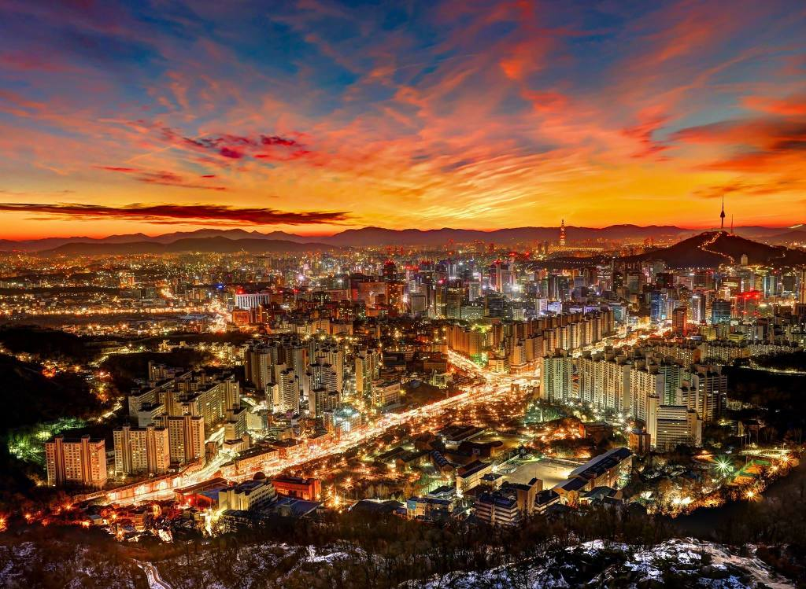
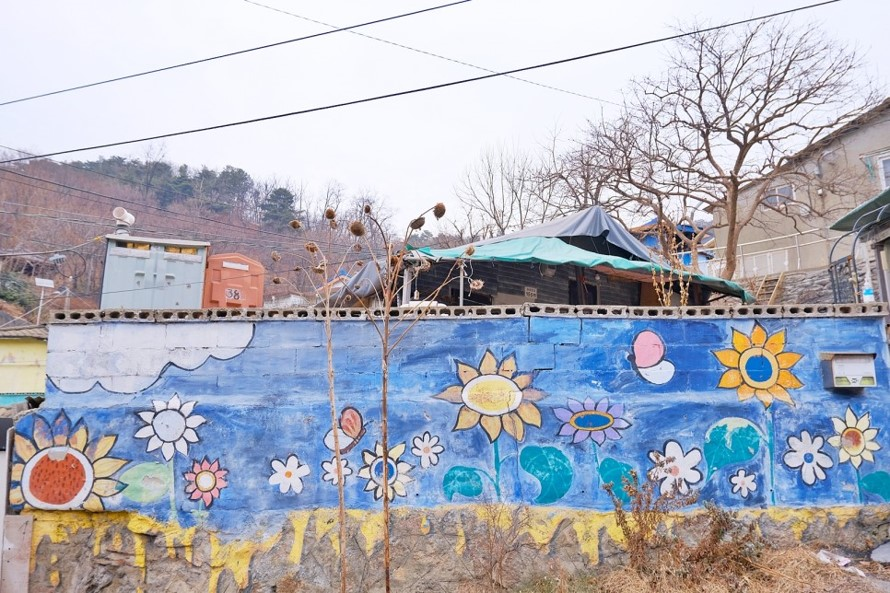

홍제동 개미마을
옛모습의 산책하기 좋은 마을. 사진찍기 좋다

서대문형무소역사관
정부수립 50주년 기념사업의 일환으로 우리 민족의 근·현대사와 선열들의 자주독립정신을 배울 수 있는 역사 교육의 장으로 삼고자 1995년 공사를 시작하여 1998년 11월 개관하였다.

서대문독립공원
독립공원은 1945년 8월 15일 광복이 될 때까지 수많은 애국지사와 1960년대 정치적 변동을 겪으면서 많은 시국사범들이 수감되었던 서울구치소가 있었던 곳이다.

이화여자대학교 자연사박물관
연건축면적 1,980㎡에 57,000여 점의 유물을 소장한 국내 최초의 자연사박물관이다. 대학에서 소장하고 있는 생물과학·지구과학 관련학과의 자료 1,200종 2,000여 점을 진열해놓았다
서대문구 맛집

카츠업
서울 서대문구 연세로5길 32 1층 카츠업
혼밥 하기 좋은 가성비 좋은 맛집

라구식당
서울 서대문구 연세로 42-24 1층
파스타와 라자냐가 맛있는 분위기 좋은 맛집

정육면체
서울 서대문구 연세로5다길 22-8 1층 정육면체
다양한 면요리를 파는곳

시오
서울 서대문구 연희로11가길 23 1층
연희동 일식집 맛있는녀석들의 오색찬란한 일본가정식

소바연구소
서울 서대문구 명물길 50-9 1층
100%메밀면을 쓰는 일식당

키친봄날
서울 서대문구 신촌로11길 62 1층 키친봄날
계란이 잔뜩 들어간 김밥맛집